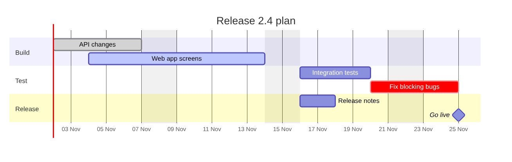

Guide · Confluence Cloud
Gantt chart in Confluence Cloud (free, with Mermaid)
Confluence Cloud does not draw Mermaid on its own. Paste a Mermaid gantt block into a page and it stays a code block: readers see text, not a chart. A Mermaid app draws it. With Mermaid Editor for Confluence, a free app on the Atlassian Marketplace, you type or paste the plan as text and the Gantt chart draws next to it while you type. Below: the steps, a release plan to copy, how the syntax works, and the mistakes that move bars to the wrong date.
What Confluence Cloud does with Mermaid on its own
Confluence Cloud does not draw Mermaid itself. In our tests in October and November 2026, a ```mermaid block pasted into a page became an ordinary code block: readers see the lines of the plan, not the chart. The code is kept safely, but nothing is drawn.
To see the chart you need a Mermaid app that adds a macro to the editor, or you draw the diagram elsewhere and upload a picture. How to add Mermaid diagrams to Confluence Cloud compares those routes.
How to add a Gantt chart with Mermaid Editor for Confluence
Full disclosure: Dortus makes this app. The steps:
- A Confluence admin installs Mermaid Editor for Confluence from the Atlassian Marketplace. The app is free.
- Open the page in edit mode. Type
/mermaidand choose Mermaid Editor. You can also open the + insert menu in the toolbar and search for Mermaid Editor. - The editor opens with the code on the left and a live preview on the right. Click the Gantt example to start from a short release plan, or paste the example from this page. If you paste a block that starts with
```mermaid, the fences are removed for you. - Change the text. The preview redraws as you type. If a line is wrong, the preview says what is wrong and names the line, and that line is marked in the code.
- Click Insert diagram, or press Ctrl+Enter (Cmd+Enter on a Mac). Publish the page.
- To change it later, select the diagram in the editor and click the pencil icon. Versions in the editor brings back any of the last 20 saves.
On the page the diagram fits the width of the page. Hover over it, or tab to it, for the zoom buttons. Click it, or use Open large, to see it in a big window. SVG and PNG download the diagram for a slide or an email. In Confluence’s dark mode the diagram is drawn in Mermaid’s dark colours. The app has 12 examples to start from: flowchart, sequence, class, state, Gantt, pie, mindmap, timeline, journey, ER, architecture and kanban.
Where it lives: the app runs on Atlassian Forge. The Mermaid code is saved in the macro on the page, earlier versions in Forge storage in your own Atlassian site, and the diagram is drawn in the browser of the person reading the page.
Example: a release plan
A release with build, test and release work, two dependencies and a go-live milestone. Copy it, change the names and dates, and paste it into the editor.
gantt
title Release 2.4 plan
dateFormat YYYY-MM-DD
axisFormat %d %b
excludes weekends
section Build
API changes :done, api, 2026-11-02, 5d
Web app screens :active, web, 2026-11-04, 8d
section Test
Integration tests : test, after api web, 4d
Fix blocking bugs :crit, fix, after test, 3d
section Release
Release notes : docs, after web, 2d
Go live :milestone, live, after fix docs, 0d
Drawn with Mermaid 12.2, the version the app uses, on 2 November 2026. The red line is the day it was drawn: a Gantt chart marks today.
How the syntax works
gantton the first line names the diagram type.titleputs a heading above the chart.dateFormat YYYY-MM-DDis how you write dates in the tasks.axisFormat %d %bis how dates are shown along the bottom: day and short month.excludes weekendsskips Saturdays and Sundays. A task of5dthen takes five working days, and weekends are shaded grey.section Buildstarts a group of tasks with a label on the left.- A task is a name, a colon, and then values separated by commas: optional tags, an id, a start, and a duration. In
API changes :done, api, 2026-11-02, 5dthe tag isdone, the id isapi, it starts on 2 November and takes five days. - Tags:
done(grey),active(highlighted),crit(red, critical) andmilestone. after api webstarts a task when the later of those two tasks ends. Makeapilonger and everything after it moves along.- Durations use a number and a unit, with no space:
3dfor days,2wfor weeks,4hfor hours. - A milestone with
0dis drawn as a diamond. The red line for today can be switched off with a linetodayMarker off.
Let an AI assistant write the first version. ChatGPT and Claude can write Mermaid. Describe the plan in plain words, ask for a Mermaid gantt chart with dateFormat YYYY-MM-DD, and paste the answer into the editor. Read the result: assistants sometimes invent a date or use syntax that does not draw.
Common mistakes and how to fix them
Watch out: most Gantt mistakes give no error. Mermaid draws a chart, just not the one you meant. Check the dates in the preview.
- A date in another format than
dateFormat. WithdateFormat YYYY-MM-DD, a task that starts on05-11-2026was drawn in May 2026 in our test, not on 5 November. A date such as31-12-2026stops the chart with “Invalid date”. Fix: write every date the waydateFormatsays, or changedateFormattoDD-MM-YYYY. afterwith an id that does not exist. A typo such asafter biuld, or a task without an id, makes the task start today, without an error. Fix: give the earlier task an id (the value after the tags) and check the spelling.- A colon in the task name.
Phase 1: design :des, 2026-11-02, 5dwas drawn as “Phase 1”: the colon ends the name. Fix: leave the colon out, or write it as#58;, as inPhase 1#58; design. - A duration in words.
5 daysor1 weekis not read, and the task gets no bar. Fix:5dor1w, with no space. - The same id twice. In our test the second task with id
deswas not drawn as a bar. Fix: give every task its own id.
Other ways
Other Mermaid apps exist on the Atlassian Marketplace; the Mermaid guide lists points worth comparing. For a timeline you want to draw by hand, with bars and shapes placed exactly where you want them, a drawing app such as draw.io fits better.
FAQ
Can I make a Gantt chart in Confluence Cloud without an app?
Not from Mermaid code. In our tests a pasted Mermaid gantt block stayed a code block. You can draw the chart in the Mermaid Live Editor at mermaid.live and upload the image, but then the chart is a picture that nobody can edit on the page.
Is Mermaid Editor for Confluence free?
Yes. It is free on the Atlassian Marketplace. Mermaid itself is an open source project.
How do I make one task start after another?
Give the first task an id and start the next one with after and that id, for example after api. With two ids, after api web, the task starts when the later of the two ends. Change one duration and the tasks after it move along.
How do I add a milestone?
Add the milestone tag and a duration of 0d, for example Go live :milestone, live, after fix, 0d. Mermaid draws it as a diamond.
Does the Gantt chart update from Jira?
No. The chart is drawn from the text in the macro. It does not read Jira work items. To change the plan, change the text.
Can I put the Gantt chart in a slide or an email?
Yes. Mermaid Editor for Confluence downloads the diagram as SVG or PNG from the page. The Mermaid text stays in the page, so the plan can still be edited later.
By diagram type
A Gantt chart shows work over time. Mermaid diagram examples for Confluence has a short example of each of twelve diagram types. Guides that go deeper on one type:
- Sequence diagrams in Confluence Cloud
- Mind maps in Confluence Cloud
- ER diagrams (entity relationship) in Confluence Cloud
- Class diagrams in Confluence Cloud
- State diagrams in Confluence Cloud
- Timelines in Confluence Cloud
- Pie charts in Confluence Cloud
- Flowcharts in Confluence Cloud
Questions
An example that does not draw for you, or a mistake we missed? Email support@dortus.com.
Mermaid Editor for Confluence by Dortus
Type the diagram, watch it draw
A Confluence macro with Mermaid code on the left and a live preview on the right. The code stays in the page, so the diagram stays editable. Runs on Atlassian Forge.
Get it free on the Atlassian Marketplace
Not a Confluence admin? In Confluence, open Apps, then Explore apps, search for Mermaid Editor for Confluence and send a request. Your admin gets an email and can install it.
See also: How to add Mermaid diagrams to Confluence Cloud (including diagrams from ChatGPT or Claude)